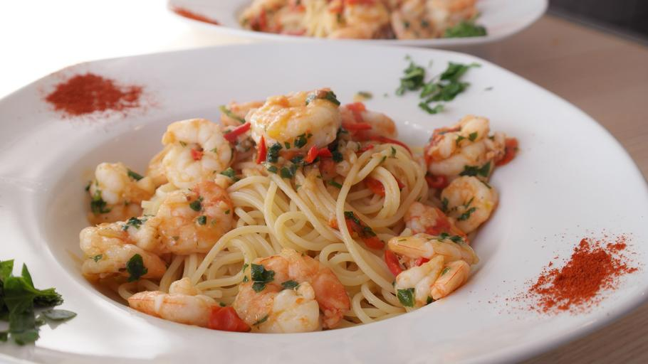
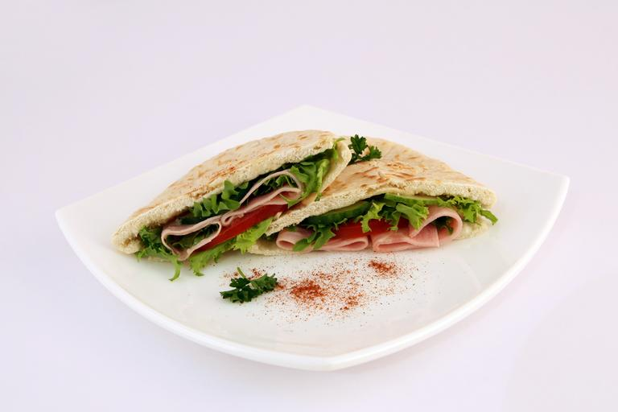
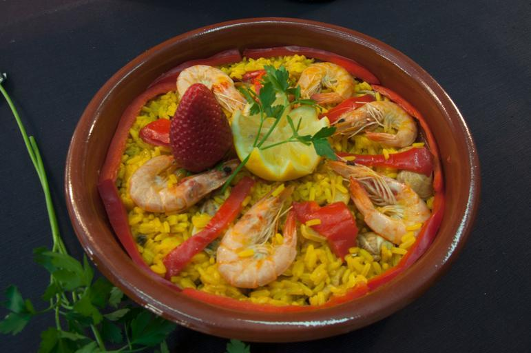
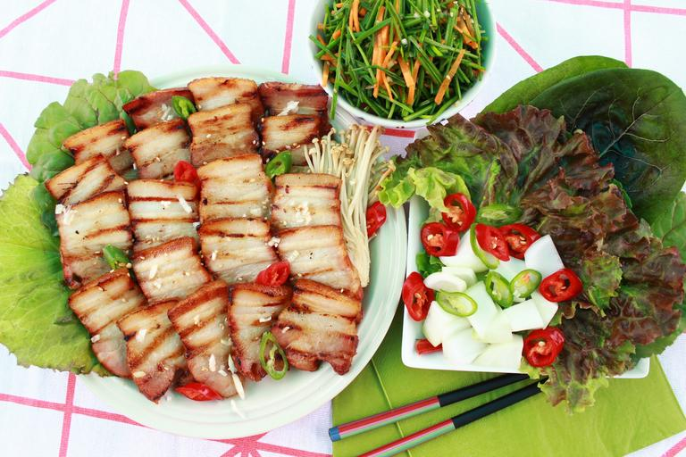
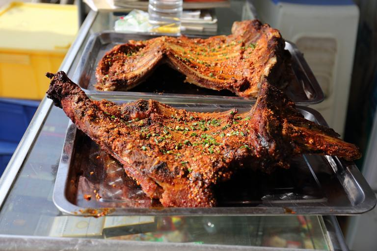

| Monday : Dolma | ingredients | preparation method |
|---|---|---|
 |
|
|
| Tuesday : Fried shrimps in sauce | ingredients | preparation method |
 |
|
|
| Wednesday : Pasta with Shrimp | ingredients | preparation method |
|  |
|
|
| Thursday : Pita Bread | ingredients | preparation method |
|  |
|
|
| Friday : Seafood Paella | ingredients | preparation method |
|  |
|
|
| Saturday : Pork Meat Ssam | ingredients | preparation method |
|  |
|
|
| Sunday : Grilled Chuck Roast | ingredients | preparation method |
|  |
|
|
| Picture | rating | quotes |
|---|---|---|
|
★★★★★ | I had the Tuesday's "Fired Shrimps". it was delicious! The staff were very friendly and attentive, making for a great dining experience overall. I highly recommend this dish and will definitely be coming back again! |
| ★★★★★ | I tried the Seafood Paella on a friend's recommendation and it was amazing! The dish was packed with fresh ingredients and the flavors blended together perfectly. The restaurant was also very clean and well-maintained, making for a great dining experience overall. I would definitely recommend this dish to anyone looking for a delicious seafood meal. | |
| ★★★★★ | I had the Wednesday special, Mediterranean Pasta with Tomato and Basil Shrimp and Lobster, and it was absolutely delicious! The ingredients were incredibly fresh and the flavors were unlike anything I've had before. The combination of the seafood with the tomato and basil sauce was a perfect balance. Overall, I highly recommend this dish to anyone looking for a unique and flavorful pasta experience. |
| Menu | Price |
|---|---|
| Stuffed Mushrooms | 9000won |
| Shrimp Cocktail | 12000won |
| Bruschetta | 8000won |
| Menu | Price |
|---|---|
| Grilled Salmon | 12000won |
| Filet Mignon | 13000won |
| Chicken Parmesan | 12000won |
| Menu | Price |
|---|---|
| Tiramisu | 7000won |
| Cream Brulee | 6500won |
| Chocolate Lava Cake | 7000won |
| Menu | Price |
|---|---|
| White Wine-Villa M | 7000won |
| Draft Beer-Asahi | 6000won |
| Cocktail-Peach Crush | 7000won |
Please refer to the menu page for more information.
Phone number: 555-123-4567
Email address: info@restaurantxyz.com
Our restaurant serves Mediterranean and Asian fusion dishes using fresh local ingredients.
The Mediterranean spices and dishes harmonized with Asian tastes are enough to satisfy your taste.
Also, our restaurant is interested in sustainable agriculture and aquaculture, so we use environmentally friendly ingredients.
"Best of the City" award : Recognition from local food critics
You can see more awards here!
“I've been coming to Restaurant XYZ for years and I'm always blown away by the quality of the food and the impeccable service”